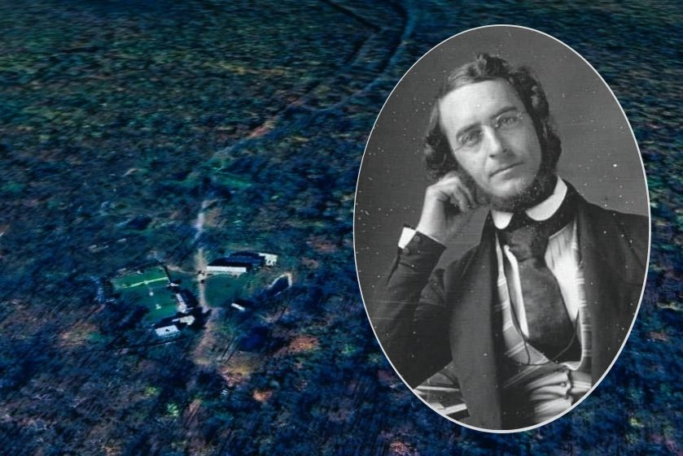
Lest the name "Booth" in the last story leave us remembering a villainous assassin, this installment restores the name's honor: chemist James Curtis Booth, whose brilliant mind and 1843 summer at Elizabeth Furnace sparked a lasting bond with the Coleman family.
James Curtis Booth (1810–1888) was one of America's pioneering chemists, among the first Americans to study under the great chemists of Germany before returning home to help establish the discipline as a serious American science.
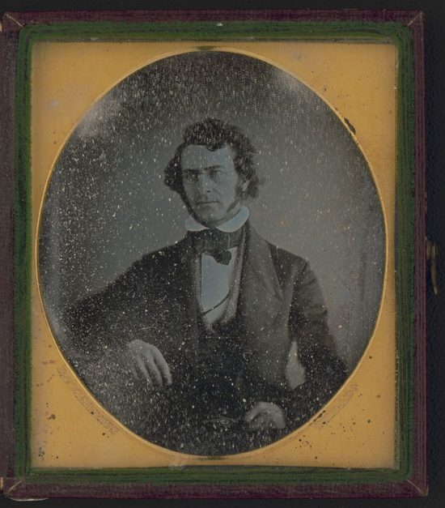
Booth had studied under Friedrich Wöhler in Germany, one of the founders of organic chemistry, and returned to Philadelphia to establish his own laboratory and consultancy, offering chemical analysis services to the region's growing industries — among them, Pennsylvania's iron masters, eager to understand the composition of their ores.
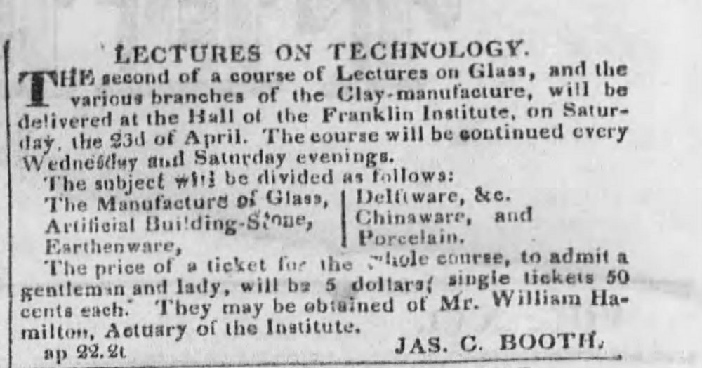
He taught chemistry at the Franklin Institute in Philadelphia and later served as chief chemist and melter and refiner at the U.S. Mint, a position he held for over three decades. He was among the founding members of the American Chemical Society.
The Pennsylvania Geological Survey
Booth's reputation for rigorous analysis brought him into contact with the Coleman family through his work on the first Geological Survey of Pennsylvania, which included detailed chemical analysis of the state's iron ore deposits — Cornwall's among the most significant in the nation.
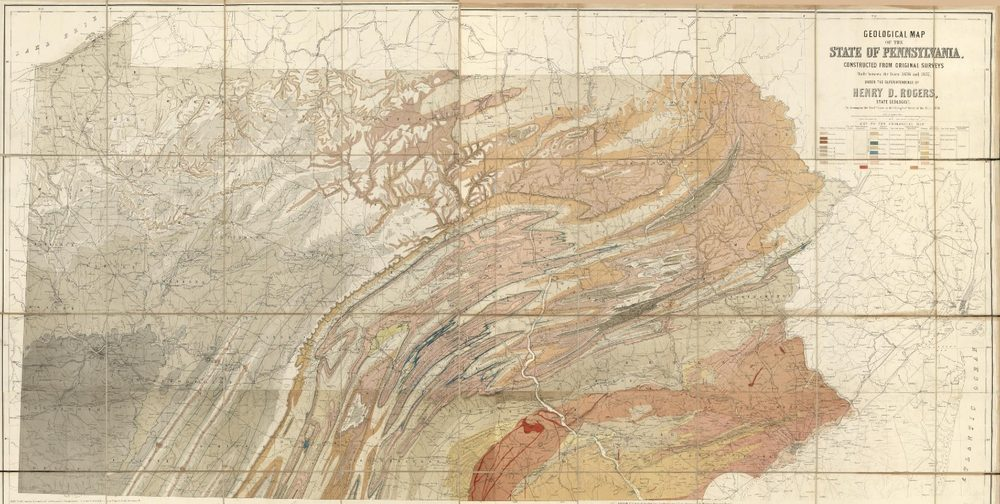
In the summer of 1843, Booth spent time at Elizabeth Furnace, then under the direction of James Coleman and his wife Harriet Dawson Coleman, conducting chemical analysis of the furnace's ore and iron products.
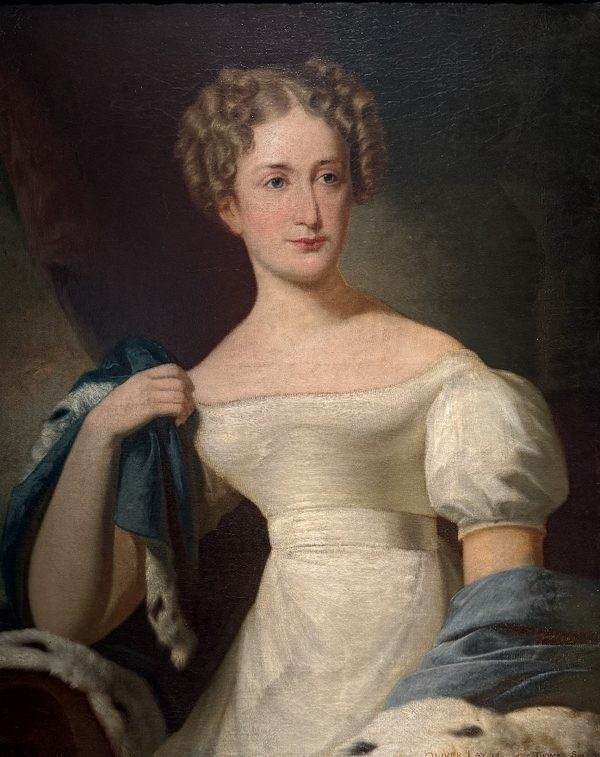
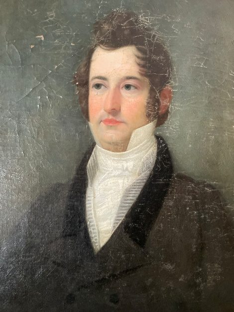
The visit left a lasting impression on both sides. Booth's careful, methodical approach to his work impressed the Colemans, while Booth himself seems to have enjoyed genuine warmth from the family — correspondence between Booth and the Colemans continued for years afterward, addressing not just business matters but genuinely personal news.
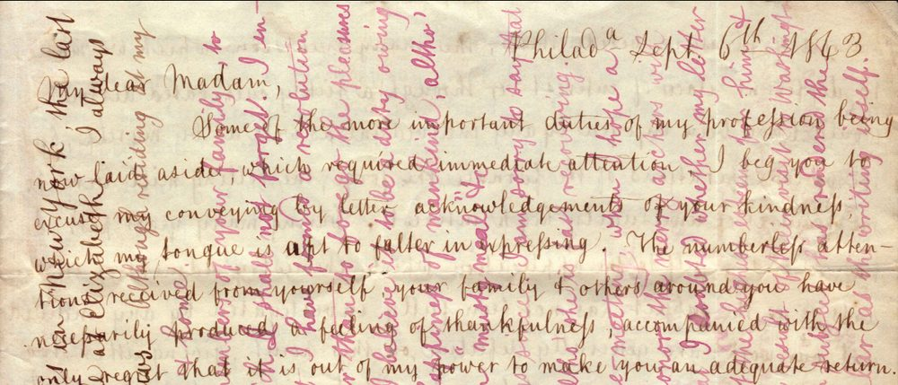
A Continuing Relationship
Booth's connection to the Coleman family did not end with the 1843 survey work. He continued to perform chemical analyses for various Coleman iron interests over the following decades, and his name appears in Coleman correspondence discussing everything from ore quality to the education of the family's younger sons as they came of age.
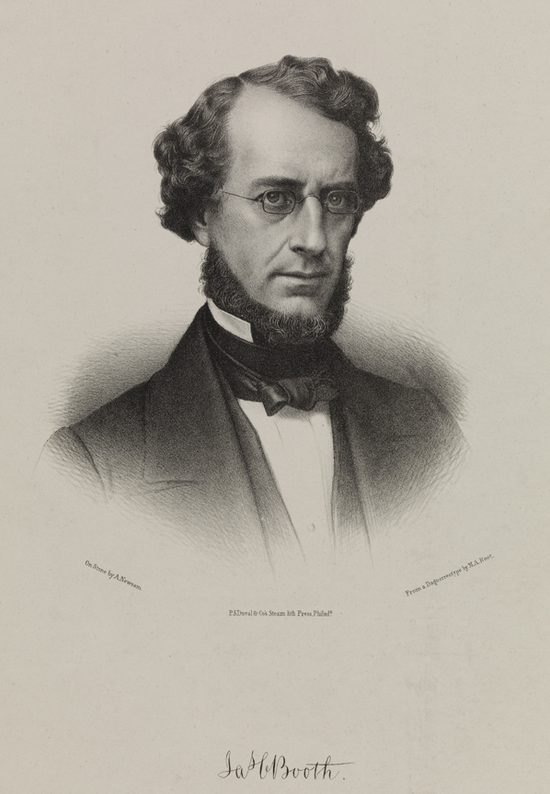
In 1845, Booth was retained by the estate of the Bayard family to conduct a detailed mineralogical analysis of ore from the Chestnut Hill mine, a document that survives today as an example of his exacting scientific method — pages of careful measurements, comparisons and conclusions, all in service of determining a mine's true commercial value.
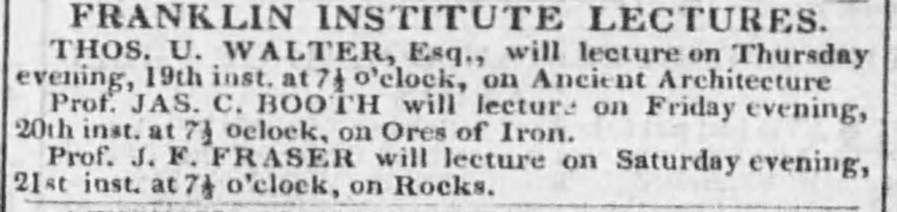
An Enduring Legacy
Booth co-authored, with Campbell Morfit, "The Encyclopedia of Chemistry, Practical and Theoretical," a monumental reference work that went through multiple editions and remained a standard resource for decades.
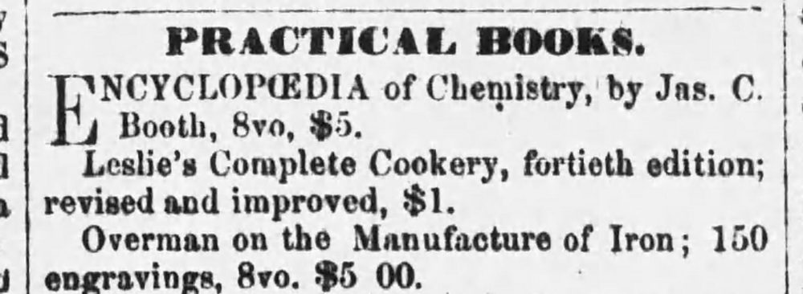
His chemical consultancy touched everyday commerce as well as heavy industry. A city newspaper advertisement from 1850 cites "analysis by Professor Booth" to certify the purity of a cider vinegar product — a small reminder that 19th-century chemistry sold soap and vinegar just as readily as it assayed iron ore.
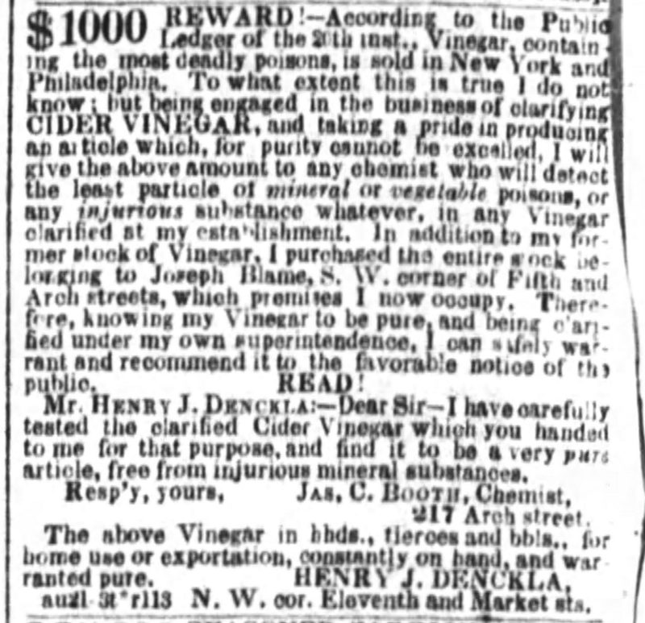
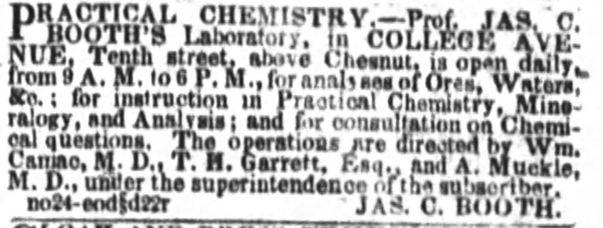
Booth's career at the U.S. Mint intersected, however distantly, with another thread already covered in this collection: the Mint's melting and refining processes were precisely the sort of technical challenge Booth's training had prepared him to solve, at a time when the nation's currency, and its credibility, depended on getting the chemistry right.
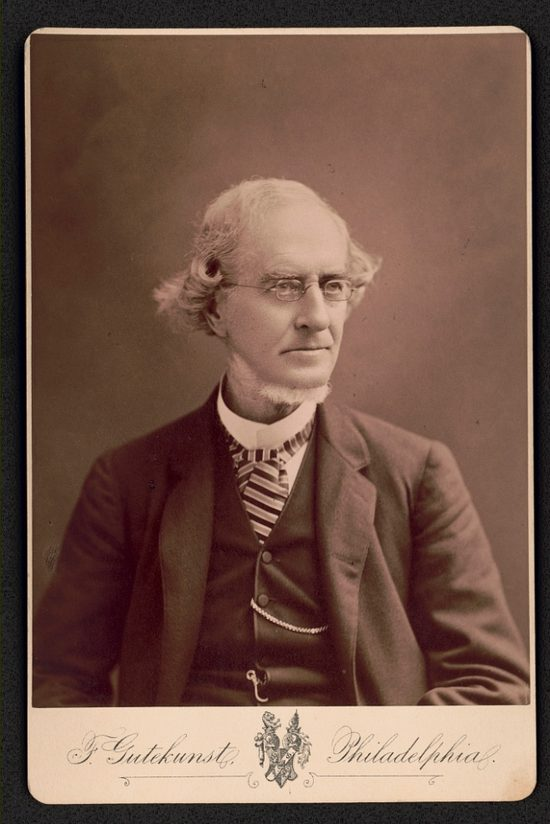
James Curtis Booth died in Philadelphia in 1888, having spent nearly six decades at the forefront of American chemistry. His grave marker, understated for a man of such considerable achievement, simply records his name and dates — the "brilliant mind" behind it left to the historical record, and to those who, like the Colemans, had the good fortune to work alongside him.
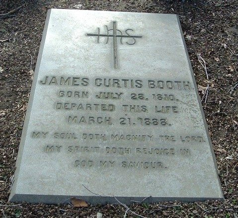
The Elizabeth Furnace estate, subject of Craig Coleman's ongoing stewardship and the setting for so many of the Coleman family's chapters — including the mix-up unraveled in "One Mystery That No Longer Lingers" — holds among its papers this quieter thread: a scientist's friendship with an iron family, sustained across decades by mutual respect.
Craig Coleman, Elizabeth Furnace, for access to the correspondence and documents.
Originally published on LebTown, June 24, 2025.